EMB / EMR and MRE2-RBE all-electric CNC tube benders, Ø19/32″ to Ø4″
15 EMB – 75 EMR · 50 – 100 MRE2-RBE · 10 models

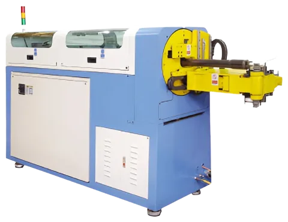
1 / 12


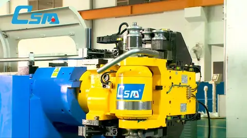
45 EMR CNC tube bender
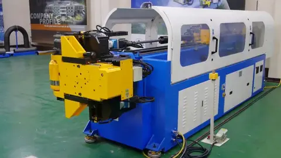
45 EMR — left- and right-hand bending
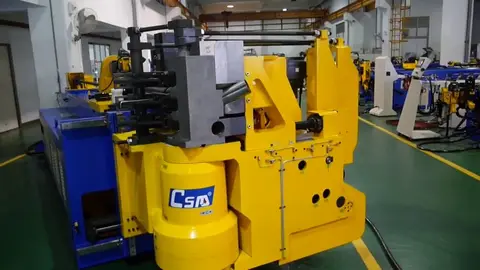
100 MRE2-RBE all-electric pipe bender
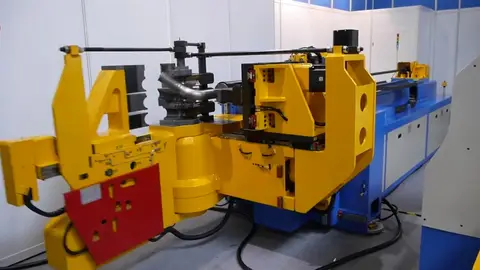
100 MRE2-RBE CNC mandrel tube bender
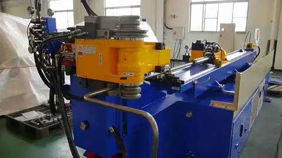
32 MBRE P double-head pipe bender with punch — furniture
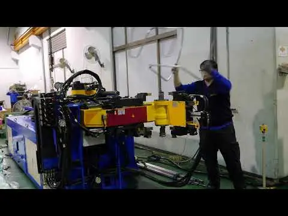
32 MBRE tube bender with push bending
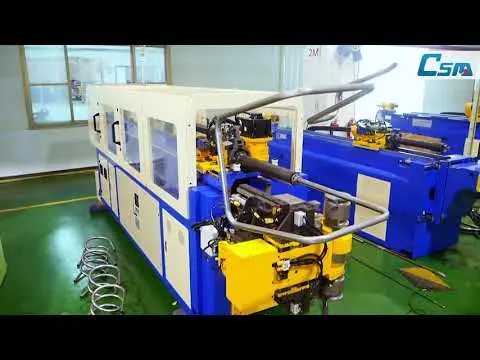
30 EMR P steel pipe bender with punching head — chairs and furniture
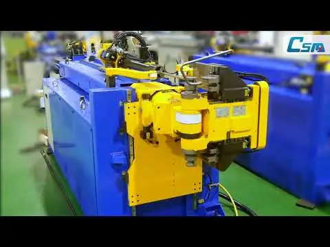
20 EMB — car head-rest bars
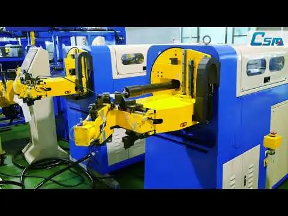
15 EMB all-electric bender — fuel lines
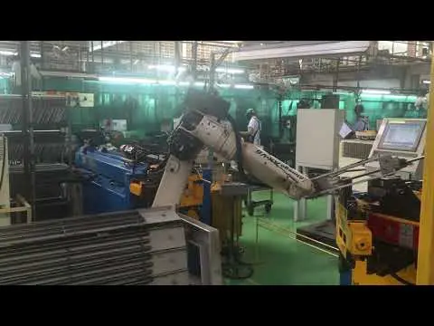
20 EMBH with robot cell — car head rests
Videos 1 – 3 of 10
CSM's all-electric CNC benders: every axis — bend arm, carriage, collet, clamp and pressure die, side booster, tool shift and mandrel — is a servo motor, so there is no hydraulic unit, no oil, no warm-up and about half the energy of a hydraulic bender, with ±0.01° bend-arm accuracy. The EMB / EMR work-head rotates to bend left- and right-hand in the same part — brake and fuel lines, air-conditioning and oil tube on the 15 and 20, furniture and health-care tube on the 30 – 45, automotive and transportation tube on the 75 — with 3 + 3 stacked tools and a roll-bending head. The MRE2-RBE adds a servo rear booster for Ø2″ to Ø4″ tube in thin walls and tight radii.
- All axes by servo motor: bend arm, carriage, collet, clamp die (EMB / EMR by pneumatic), pressure die, side booster, tool shift up-down and left-right
- Work-head rotation by servo motor — converts between left- and right-hand bending within one part (EMB / EMR)
- Mandrel by servo motor with automatic lubrication and anticipated retraction
- Servo rear booster on the MRE2-RBE and 75 EMR
- Industrial-PC control with touch-screen: bending simulation, 3D preview and interference detection; reads IGS / STP files
- Programmable speed for every servo axis; USB port for data transfer; manual / automatic mode; inch / metric; XYZ / YBC axes
- CSA-approved electrical panel; 600 V 3-phase with transformer (208 / 240 / 480 V on request)
| Model | 15 EMB | 20 EMB | 20 EMR | 32 MBRE | 30 EMR | 45 EMR | 75 EMR |
|---|---|---|---|---|---|---|---|
| Max. tube capacityOD × wall, mild steel | Ø19/32″ (15 mm) × 16 ga (1.5 mm) | Ø13/16″ (20 mm) × 16 ga (1.5 mm) | Ø13/16″ (20 mm) × 16 ga (1.5 mm) | Ø1-1/4″ (32 mm) × 15 ga (1.8 mm) | Ø1-3/16″ (30 mm) × 14 ga (2 mm) | Ø1-3/4″ (45 mm) × 16 ga (1.6 mm) | Ø3″ (76.2 mm) × 14 ga (2 mm) |
| Centreline radius (CLR) | 0.4 – 2.2″ (10 – 55 mm) | 0.4 – 3.1″ (10 – 80 mm) | 0.4 – 3.1″ (10 – 80 mm) | 1.0 – 5.0″ (25 – 128 mm) | 0.6 – 3.5″ (15 – 90 mm) | 1.2 – 5.9″ (30 – 150 mm) | 1.6 – 9.1″ (40 – 230 mm) |
| Mandrel working length | 3.3 ft · 39″ (1,000 mm) | 4.9 ft · 59″ (1,500 mm) | 4.9 ft · 59″ (1,500 mm) | 11.5 ft · 138″ (3,500 mm) | 9.2 ft · 110″ (2,800 mm) | 9.8 ft · 118″ (3,000 mm) | 9.8 ft · 118″ (3,000 mm) |
| Tooling capacitystacked dies / radii | 3+3 | 3+3 | 3+3 | 3+3 | 3+3 | 3+3 | 3+3 |
| Roll bending | — | — | Yes | Yes | Yes | Yes | Yes |
| Rear booster | — | — | — | — | — | — | Servo |
| Model | 50 MRE2-RBE | 80 MRE2-RBE | 100 MRE2-RBE |
|---|---|---|---|
| Max. tube capacityOD × wall, mild steel | Ø2″ (50.8 mm) × 15 ga (1.8 mm) | Ø3-1/8″ (80 mm) × 12 ga (2.5 mm) | Ø4″ (100 mm) × 10 ga (3.6 mm) |
| Centreline radius (CLR) | 1.2 – 5.9″ (30 – 150 mm) | 1.6 – 9.1″ (40 – 230 mm) | 1.2 – 11.8″ (30 – 300 mm) |
| Mandrel working length | 8.2 ft · 98″ (2,500 mm) | 9.8 ft · 118″ (3,000 mm) | 9.8 ft · 118″ (3,000 mm) |
| Tooling capacitystacked dies / radii | 3 | 3 | 3 |
| Roll bending | Yes | Yes | Yes |
| Rear booster | Servo | Servo | Servo |
Capacities are the manufacturer's ratings for round mild-steel tube, outside diameter × wall; CLR = centreline radius of the bend die. Mandrel length is the maximum tube length fed with the standard mandrel rod (the working length). Tooling capacity is the number of stacked bend dies / radii; "roll bending" models carry a roll-bending head for large radii; a rear booster (RBE servo, RBF / RBH / CBF hydraulic) pushes the tube from behind for thin-wall and tight-radius bends. Three-phase machines are supplied for 600 V with a CSA-approved panel. Three-phase machines are supplied for 600 V; 208 V, 240 V or 480 V 3-phase available on request.